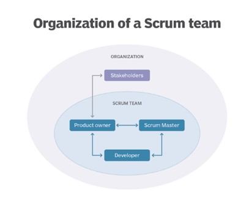

Introduction to Project Management
SDLC
SDLC Intro
- The Software Development Life Cycle (SDLC) is a structured process that enables
the production of high-quality, low-cost software, in the shortest possible production time.
- The goal of the SDLC is to produce superior software that meets and exceeds all customer expectations and demands.
SDLC
- It is also called as Software Development Process.
- SDLC is a framework defining tasks performed at each step in the software development process.
- ISO/IEC 12207 is an international standard for software life-cycle processes.
- It aims to be the standard that defines all the tasks required for developing and maintaining software.
What is SDLC?
- SDLC is a process followed for a software project, within a software organization.
- It consists of a detailed plan describing how to develop, maintain, replace and alter or enhance specific software.
- The life cycle defines a methodology for improving the quality of software and the overall development process.
SDLC Overview Process
SDLC Models
Following are the most important and popular SDLC models followed in the industry −
- Waterfall Model
- Iterative Model
- Spiral Model
- V-Model
- Big Bang Model
Agile Methodology
- The Agile methodology is a way to manage a project by breaking it up into several phases.
- It involves constant collaboration with stakeholders and continuous improvement at every stage.
- Once the work begins, teams cycle through a process of planning, executing, and evaluating.
What is Agile?
- Agile is an iterative approach to project management and software development that
helps teams deliver value to their customers faster and with fewer headaches.
- Instead of betting everything on a "big bang" launch, an agile team delivers
work in small, but consumable, increments.
- Requirements, plans, and results are evaluated continuously so teams have a
natural mechanism for responding to change quickly.
SCRUM
- Scrum is a framework for project management that emphasizes teamwork, accountability
and iterative progress toward a well-defined goal.
- The framework begins with a simple premise: Start with what can be seen or known.
After that, track the progress and tweak, as necessary.
- Scrum is often part of Agile software development. It is named for a rugby formation in which everyone plays a role.
Software development Scrum roles
- Product owner. This person serves as the liaison between the development team and its customers.
The product owner is responsible for ensuring that expectations for the completed product are communicated and agreed upon.
- Scrum Master. The Scrum Master is referred to as the project facilitator.
They ensure Scrum best practices are followed. They must be good leaders and project
managers, skilled at collaboration, conflict resolution and process improvement.
- Development team. Members of the Scrum development team work together to create and
test incremental releases of the final product. Developers must know Scrum and Agile development practices.
SCRUM team Organization

Scrum process
- The Scrum process encourages practitioners to work with what they have and continually evaluate what is or is not working.
- Good communication is essential and is carried out through meetings, called "events.“
Scrum events include the following:
- Daily Scrum. This event is a short, stand-up daily meeting that takes place in the
same place and time each day. In these meetings, the team reviews work accomplished
the previous day and plans what will be done in the next 24 hours. This is the time
when team members discuss problems that might prevent project completion.
- Sprint. A Sprint is the time frame in which work must be completed --
often 30 days. New Sprints start right after the end of the previous one.
- Sprint Planning Meeting. In these meetings, everyone participates in setting goals.
At the end, at least one increment -- a usable piece of software -- should be produced.
- Sprint Review. This is the time to show off the increment.
- Sprint Retrospective. A Sprint Retrospective is a meeting held after a Sprint ends.
During this meeting, everyone reflects on the process. A team-building exercise may
also be offered. An important goal of this event is continuous improvement.
What are Scrum artifacts?
- An artifact is something of historical interest that warrants being re-examined.
- In Scrum product development, artifacts are used to see what has been done and what is still in the queue.
- Product backlog.
- Sprint backlog.
-
Product increment.
-
Burn down.
Benefits of Scrum methodology
- Quality products.
-
Teamwork.
- Flexibility.
- Reduced risk.
-
Decreased time to market.
- Higher return on investment (ROI).
Jira
Jira Intro
- Jira is a software application used for issue tracking and project management.
- The tool, developed by the Australian software company Atlassian,
has become widely used by agile development teams to track bugs, stories, epics, and other tasks.
What is Jira used for?
- Jira Software is part of a family of products designed to help teams of all types manage work.
- Originally, Jira was designed as a bug and issue tracker.
- But today, Jira has evolved into a powerful work management tool for
all kinds of use cases, from requirements and test case management to agile software development.
Jira for requirements & test case management
- An increasing number of teams today are developing more iteratively,
and Jira Software is the central hub for the coding, collaboration, and release stages.
- For test management, Jira integrates with a variety of add-ons so the QA’s
testing slides seamlessly into the software development cycle. Teams can test effectively and iteratively.
- QA teams use Jira issues, customized screens, fields, and workflows to manage manual and automated tests.
Jira for agile teams
- For teams who practice agile methodologies, Jira Software provides scrum and kanban boards out-of-the-box.
- Boards are task management hubs, where tasks are mapped to customizable workflows.
- Boards provide transparency across teamwork and visibility into the status of every work item.
- Time tracking capabilities and real-time performance reports
(burn-up/down charts, sprint reports, velocity charts) enable teams to closely monitor their productivity over time.
- Jira Software supports any agile methodology for software development.
Jira for Management Teams
- Jira for agile teams
- Jira for project management teams
- Jira for software development teams
- Jira Software for DevOps teams
- Jira for product management teams
- Jira for task management
- Jira for bug tracking
Jira Item details
Scrum board
- Scrum boards enable teams to manage their sprints and backlog.
Kanban board
- A kanban board allows teams to visualize the flow of work and limit work in progress.
Backlogs
- A backlog contains outstanding issues for a team to work on.
Epics, User Stories, Issues
- An epic represents a large body of work, which may require several sprints to complete.
- Multiple user stories comprise an epic. A Jira issue represents a single piece of work in a project.
Time Tracking
- Time tracking allows teams to record the amount of time they spend working on issues.
Custom workflows
- Teams can create custom workflows to drive the progression of issues on a scrum or kanban board.
Roadmaps
- Roadmaps create a visual representation of all the epics a team is working on, so teams
can plan large pieces of work in advance.
Advanced search
- Advanced search uses Jira Query Language (JQL) to search for specific criteria
in issues that can’t be done in quick or basic searches.
Permissions
- Utilize permissions to grant team members different levels of access and to lock down sensitive information.
Jira Software
Slack
Slack tool – project create access
- Slack is a messaging app for business that connects people to the information that they need.
- By bringing people together to work as one unified team, Slack transforms the way that organisations communicate.